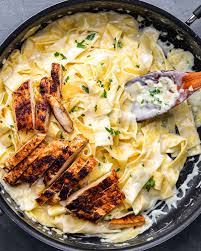

Description
Alfredo pasta is a creamy and comforting dish made with pasta, butter, cream, and Parmesan cheese. It is popular because it is easy to prepare and uses simple ingredients. Chicken Alfredo is a common variation that adds cooked chicken to make the meal more filling and flavorful.
Ingredients
- 200 g fettuccine pasta
- 2 chicken breasts
- 1 cup heavy cream
- 2 cloves garlic
- 1/2 cup grated Parmesan cheese
- 2 tablespoons butter
- Salt and pepper to taste
Instructions
- Boil pasta according to package instructions.
- Cook chicken in a pan until fully cooked.
- Melt butter and sauté garlic.
- Add cream and Parmesan cheese.
- Mix pasta and chicken with the sauce.
- Serve warm.
Finished Dish
Image source: Unsplash